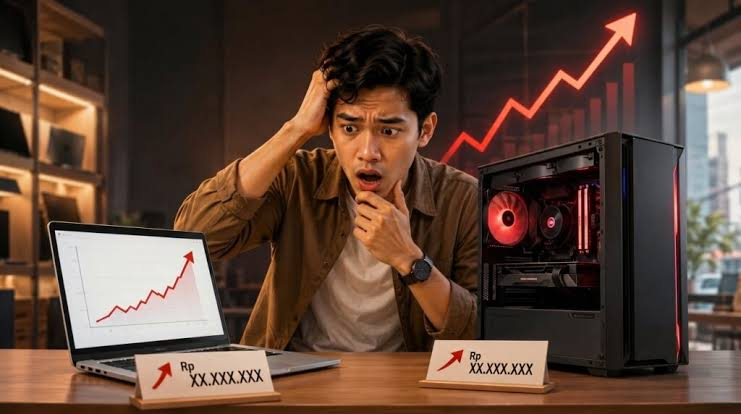
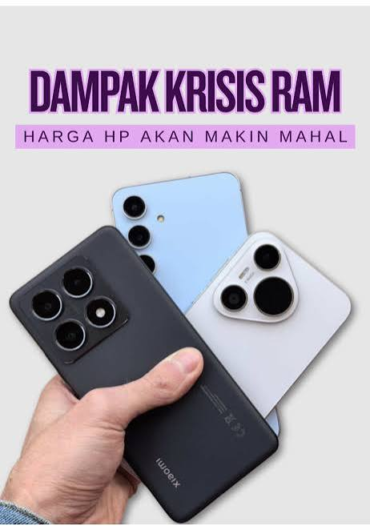

Efek Domino Kenaikan Harga: Dari Rakit PC Hingga Beli HP Baru
.jpeg)
KEMBALI KE HALAMAN 1
Lalu, bagaimana kelangkaan memori gara-gara AI ini secara nyata berdampak pada kita sebagai konsumen sehari-hari?
1. Dampak Terhadap Pengguna PC dan Laptop

- Rakit PC Makin Menguras Kantong: Uang yang dulunya bisa mendapat SSD 2TB, kini mungkin hanya cukup untuk membeli versi 1TB.
- Laptop "Disunat" Spesifikasinya: Banyak merk laptop terpaksa menurunkan spesifikasi. Laptop 10 jutaan yang tahun lalu sudah RAM 16GB, kini banyak yang kembali ke 8GB agar harganya tidak terlihat naik.
2. Dampak Terhadap Pasar Smartphone (HP)

- HP Kelas Menengah Pelit Memori: Jika sebelumnya HP 2-3 jutaan banyak yang 256GB, kini vendor memangkasnya kembali ke 128GB untuk mempertahankan harga jual.
- Penderitaan Tanpa Slot MicroSD: Mayoritas HP modern sudah tidak punya slot MicroSD. Konsumen dipaksa beli varian memori besar yang harganya mahal, atau berlangganan Cloud Storage tiap bulan.
Kesimpulan: Terus, Harus Gimana Kalau Mau Beli HP Sekarang?
Revolusi AI memang canggih, tapi sayangnya kitalah yang harus menanggung "pajak" mahalnya komponen. Jika kamu terpaksa harus ganti HP saat ini juga (karena HP lama rusak atau memori sudah penuh), kamu mungkin bingung harus pilih yang mana agar tidak rugi gara-gara spesifikasi yang banyak disunat pabrik.
Tenang saja! Daripada kamu salah beli HP yang overprice tapi spesifikasinya jelek, mari kita bahas daftar rekomendasi HP apa saja yang paling worth it dan aman untuk dibeli di tengah krisis komponen ini.
LANJUT KE HALAMAN 3: REKOMENDASI HP TERBAIK UNTUK PERTENGAHAN 2026
.jpeg)